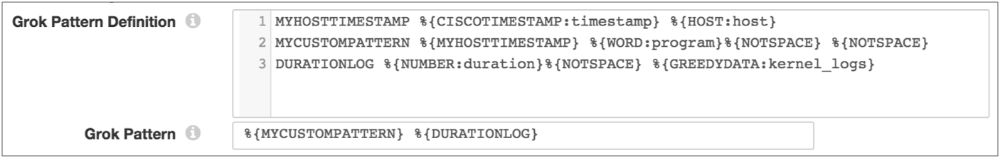

You can use the grok patterns in this appendix to define the structure of log data.
You can use a single pattern or compose several patterns to define a larger pattern, or create a custom pattern.
<PATTERN NAME> <grok pattern> <PATTERN NAME2> <grok pattern>
MYHOSTTIMESTAMP %{CISCOTIMESTAMP:timestamp} %{HOST:host}
MYCUSTOMPATTERN %{MYHOSTTIMESTAMP} %{WORD:program}%{NOTSPACE} %{NOTSPACE}
DURATIONLOG %{NUMBER:duration}%{NOTSPACE} %{GREEDYDATA:kernel_logs}
%{MYCUSTOMPATTERN} %{DURATIONLOG}
The following image shows the configuration example in the UI:

You can use the following general grok patterns to define the structure of log data:
You can use the following date and time grok patterns to define the structure of log data:
You can use the following log-related grok patterns to define the structure of log data:
([Aa]lert|ALERT|[Tt]race|TRACE|[Dd]ebug|DEBUG|[Nn]otice|NOTICE|[Ii]nfo|INFO|[Ww]arn?(?:ing)?|WARN?(?:ING)?|[Ee]rr?(?:or)?|ERR?(?:OR)?|[Cc]rit?(?:ical)?|CRIT?(?:ICAL)?|[Ff]atal|FATAL|[Ss]evere|SEVERE|EMERG(?:ENCY)?|[Ee]merg(?:ency)?)
You can use the following networking-related grok patterns to define the structure of log data:
You can use the following path grok patterns to define the structure of log data: